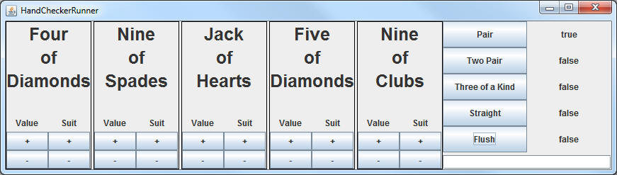

HandChecker
Inside of sacco.jar, there is a class named Card,
which is similar to the one that you've created before. It has the
following methods.
The Card class that I've provided is similar to the
one that you created earlier. Familiarize yourself with the methods, you
will need to know them.
getSuit() – returns a String that
represents the suit of the Card object (i.e. “Spades”)
getValue() – returns a String that
represents the value of the Card object (i.e. “Ace”)
toString() – returns a String that
represents the entire Card object (i.e. “Ace of Spades”)
I have enhanced the Card class to have another method:
getRank() – returns an int that
represents what ‘rank’ the current Card is (Two is lowest and has a rank of 0, Three has a
rank of 1, …King has a rank of 11, Ace has a rank of 12)
Implementing the HandChecker interface
There is another class in sacco.jar named HandCheckerRunner, which is in charge of helping generate 5-Card hands that your program is going to test. In order for the runner to work together, the class you've created must implement the HandChecker interface.
How to implement an interface:
1) You may call your class whatever you want, but you must end the
class header with "implements HandChecker"
For Example: public class PokerHands implements HandChecker
2) By completing step 1 you're promising the compiler that you'll have all of the methods listed in the HandChecker interface. The compiler will stop you if you are missing even one thing, so add the following methods to your class:
public boolean isFlush(Card[] cards) public boolean isPair(Card[] cards) public boolean isThreeOfAKind(Card[] cards) public boolean isTwoPair(Card[] cards) public boolean isStraight(Card[] cards)
3) Write the code that will make each method function with the given parameters. For now, put a dummy statement that returns false for the sake of compiling.
Running the Runner:
Once you have the first class compiling, we'll need a method that runs the HandChecker and involves your code. Add the following method (WARNING: This method assumes your class is called PokerHands)
public static void main()
{
HandCheckerRunner.main(new PokerHands());
}
Running this method will pop up the 5-Card selection window like so:
HandCheckerRunner

When any of the five buttons on the right are pressed, the five displayed
cards are generated and the corresponding method is called in your code.
The result is displayed to the right of the button.
Methods:
| Be Careful: Use the methods of Card in order to help
yourself extract the information that you need. For example: If I have a Card[]
named cards and I want to see if the first two Cards have the same suit, I have
to first extract the first two Cards out of the array, then I have to use
methods to extract their suit. Card firstCard = cards[0]; String firstSuit = firstCard.getSuit(); For those who are more comfortable, these steps can be combined: String firstSuit =cards[0].getSuit(); |